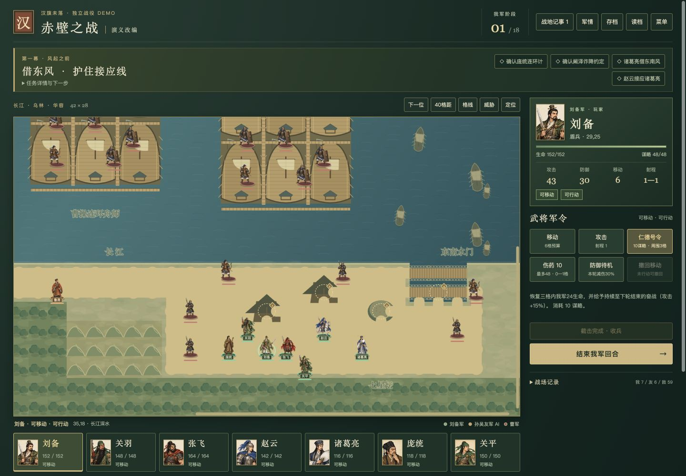

Hanqi Wei Luo.
A battlefield in the browser.汉旗未落。
浏览器里的三国战场。
Turn-based tactics, a growing campaign, and a large Red Cliffs scenario—built as a static browser game and developed through repeated design and implementation iterations.回合制战术、可持续成长的主线与大规模赤壁场景。以纯静态浏览器游戏的形式，逐步迭代玩法、规则与界面。
How can mission objectives, character growth, and clear battle feedback form a playable tactical loop without a backend or an installation step?如何把关卡目标、角色成长与清晰的战场反馈组织成可游玩的战术循环，同时让玩家无需安装、直接在浏览器中开始？
I initiated the project and directed its design iterations. Implementation was developed with AI assistance; this is an ongoing personal game project, not a claim of wholly handwritten code.我负责发起项目并推动设计迭代，实现过程有 AI 辅助。这是持续开发中的个人游戏项目，不将代码描述为完全手写。
View source on GitHub ↗查看 GitHub 源码 ↗A campaign with consequences让每一关连接下一关
The campaign moves from rescuing civilians to escorting supplies and taking a beacon tower. Between missions, a camp supports shopping, equipment, supplies, character growth, talents, deployment, and retries after defeat. Objectives and optional challenges give each battle a different decision to make.主线从溪口救民，到古道护粮，再到夜夺烽台。战斗之间的营地支持商店、装备、补给、成长、天赋、出阵与失败重试；不同的胜利条件和可选挑战，让每一关都有不同的取舍。
Linked campaign missions连续主线关卡
Characters in the roster; not all campaign recruits图鉴人物，并非均可加入主线
Red Cliffs battlefield grid赤壁战场网格

Open full-size figure ↗查看原尺寸图表 ↗
More than a single battle从单关走向多种战场
Three missions, persistent growth三关主线与成长继承
Rescue, escort, and beacon objectives share a campaign state. Camp decisions carry forward, while story and standard difficulties use different turn limits.救援、护送与烽台目标共用战役状态，营地决策延续到后续关卡；故事与标准难度设置不同的轮数限制。
Practice with a wider roster演武与更广的武将阵容
A small practice mode reuses the first map; River Crossing offers a separate 24 × 18 battlefield and a five-character selection from the 58-character roster. Practice does not award campaign progression.小演武复用首关地图；河谷争渡提供独立的 24 × 18 战场，可从 58 人图鉴中选择五人。演武不发放主线成长收益。
Red Cliffs as a separate scenario独立的赤壁战役
Seven player-controlled officers and six AI allies participate in objectives involving coordination, wind, reinforcement, fire attack, and the north bank. A bounded snapshot can translate selected campaign growth into support.七名玩家武将与六名 AI 友军围绕联络、借风、接应、火攻和北岸截击展开行动；部分主线成长可通过有上限的快照折算为支援。
The engineering behind the loop支撑玩法循环的工程结构
Rules, state, and presentation规则、状态与表现
JavaScript modules separate battle rules and campaign state from rendering, effects, camera controls, and interface code. Structured state and action validation support deterministic rule checks and command replays. The same rule modules are exposed to Node-based tests.JavaScript 模块将战斗规则、战役状态与渲染、特效、镜头及界面代码分开。结构化状态和行动验证支持确定性的规则检查与军令重放，规则模块也可供 Node 测试调用。
A static game with portable saves纯静态运行与可迁移存档
The game runs from static HTML, CSS, JavaScript, and local assets, with no backend or package installation required to play. Browser storage holds campaign and scenario saves; JSON export and import allow deliberate migration between browser origins. Older supported saves have migration paths.游戏由静态 HTML、CSS、JavaScript 与本地资源组成，游玩不需要后端或安装依赖。主线与场景进度保存在浏览器中，通过 JSON 导出、导入可跨站点迁移；已支持的旧存档具有升级路径。
A playable demo, still in development已经可玩，仍在开发
The repository includes regression tests for battle rules, campaign transitions, roster behavior, saves, and scenario rendering. The local release regression on Node 24.22.1 passed 188 tests with no failures or skips. This checks the tested rules and scenarios; it does not mean that every lineup is balanced or every route has been manually completed.仓库包含战斗规则、主线衔接、阵容行为、存档与场景渲染等回归测试。本地发布回归使用 Node 24.22.1，188 项通过、0 失败、0 跳过。它核查测试所覆盖的规则与场景，不等于所有阵容已平衡，也不等于所有路线均已人工通关。
Some character passives remain explicitly marked as design work. The current narrow-screen evidence uses a 390 px browser viewport, not a physical-phone test, and audio has not been verified. Continued work focuses on battle feedback, device usability, and broader playtesting.部分人物被动仍明确标注为设计中。当前窄屏证据来自 390 px 浏览器视口，并非手机实机测试；音频尚未验证。后续重点是战场反馈、设备可用性与更广泛的试玩。
The repository separates the MIT license for project code from artwork and other asset notices. Historical references and gameplay adaptations are documented separately; the game is not presented as a historical simulation.仓库区分项目代码的 MIT 许可与美术等素材声明，并分别注明史料参考和玩法改编；本作不作为历史仿真呈现。